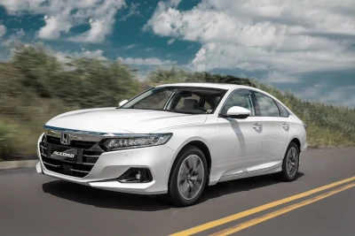
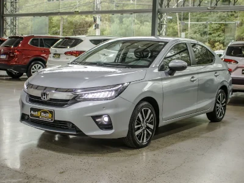
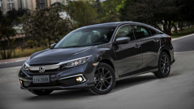

HONDA FUNDAÇÃO
Honda, é um dos mais importantes fabricantes de automóveis e motocicletas do mundo. Fundada por Soichiro Honda. Teve sua pronúncia "ronda" consolidada antes "ondá" após sua expansão e entrada no mercado alemão, determinando assim uma marca universal. Embora seja uma empresa sediada no Japão, a Honda exporta os seus veículos para o mundo inteiro. Saiba mais em https://www.honda.com.br/institucional/nossa-historia
HONDA ACCORD
O Accord é um sedan de porte grande da Honda. É fabricado desde 1976 e atualmente está na 10ª geração, presente no mercado brasileiro desde 2008. Atualmente somente na versão EX (2.0L Turbo 16V 256 cv). O Accord foi o primeiro carro de origem japonesa a ser fabricado nos Estados Unidos e o primeiro carro de origem não americana a conseguir o título de carro mais vendido do ano dos Estados Unidos entre 1989 e 1990.
HONDA CITY
O City é um veículo compacto, produzido mundialmente pela Honda desde 1981 e no Brasil desde 2009. Atualmente encontra-se em sua 7ª geração. A sétima geração do City foi lançada em 2022 no Brasil com um comprimento e entre-eixos maior em relação a geração anterior. No entanto, a altura do carro diminuiu. Ambas as versões, são vendidas como: EX, EXL e Touring e com o motor 1.5 aspirado com transmissão CVT que simula 7 marchas Motor: 1.5L I4 16V e motor elétrico. transmissão: 5 marchas, manual 7 marchas CVT.
HONDA CIVIC TYPE R

Esta geração do Type R chegou ao Brasil de forma independente e criou um grande barulho nas redes sociais. Não a toa, já que seu visual segue sendo algo bem chamativo e deixando claro ser um verdadeiro esportivo assinado, bem diferente da primeira geração, extretamente discreta.
HONDA CIVIC
O Honda Civic é um automóvel produzido pela Honda desde 1973. Atualmente encontra-se em sua décima primeira geração. Foi eleito duas vezes o Carro do Ano pela revista Autoesporte, em 2007 e em 2017. Começou a ser importado para o Brasil em 1992 junto com o Honda Accord, sendo produzido no Brasil entre 1997 e 2021. Produzido na unidade da Honda localizada em Sumaré, no estado de São Paulo, foi o sedan médio mais vendido do Brasil no 1° semestre de 2008, superando modelos concorrentes. Atualmente é produzido em dez países: Japão, Inglaterra, Estados Unidos, Canadá, Paquistão, Taiwan, Turquia, Índia, Tailândia e Vietnã. O Civic de décima geração era baseado em uma nova plataforma compacta global da Honda. O modelo foi revelado em setembro de 2015 para ser vendido em 2016. Tem como característica um novo exterior estilo "Fastback", com o pilar-C fluindo para dentro da traseira. A frente tem um design no qual uma asa cromada flui sobre os faróis. O interior recebeu muitas mudanças em relação à geração anterior, passou a receber um painel de instrumentos digital e uma tela LCD de 7 polegadas que está posicionada à visão do motorista na versão EX e superiores. A instrumentação da versão LX consiste em um tacômetro analógico grande que rodeia um velocímetro e outros mostradores digitais. Este novo Civic tem duas edições diferentes (black edition e orange edition) sendo fabricadas para Portugal 100 unidades cada.
HONDA CV-R
O Honda CR-V é um automóvel do tipo crossover SUV compacto produzido pela Honda desde o ano de 1995 que utiliza a mesma plataforma do Honda Civic, a sigla significa Comfortable Runabout Vehicle. Motor: 2.0 Combustivel: Gasolina Potencia: 204 cv Velocidade Maxima: N/D Tração: 4x4 Direção: Elétrica.